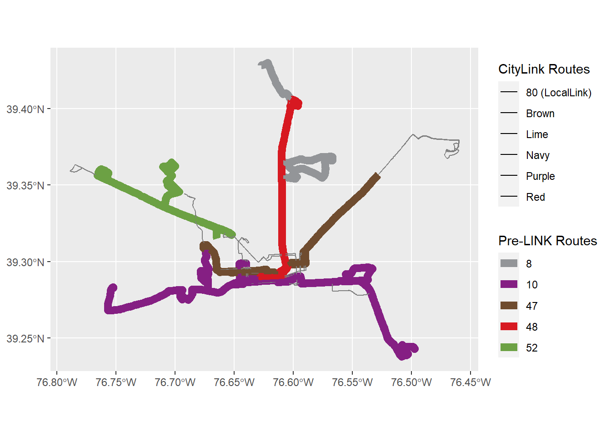

library(ggplot2)
library(gtfstools)
library(sf)
library(dplyr)Comparing the spatial extent of CityLINK Routes with their Predecessors
We can compare the spatial extent of some CityLINK routes and their predecessors.
gtfs_18 <- read_gtfs("gtfs_6_2018.zip")
gtfs_17 <- read_gtfs ("gtfs 3_17.zip")Let’s load up the route_ids we are interested in for each year.
route_ids_18 <- as.character(c("10543", "10539", "10542", "10535", "10468", "10538"))
route_ids_17 <- as.character(c("9336", "9338", "9364", "9365", "9368"))Now let’s filter our dt_gtfs with these route_ids.
routes_18 <- filter_by_route_id(gtfs_18, route_id = route_ids_18)
routes_17 <- filter_by_route_id(gtfs_17, route_id = route_ids_17)
routes_17$routes$route_short_name[1] "008" "010" "047" "048" "052"routes_18$routes$route_short_name[1] "80" "CityLink BROWN" "CityLink LIME" "CityLink NAVY"
[5] "CityLink PURPLE" "CityLink RED" GTFStools has a function that creates sf objects using the trip geometry information contained in the shapes table.
trip_geom_17 <- get_trip_geometry(routes_17, file = "shapes")
trip_geom_18 <- get_trip_geometry(routes_18, file = "shapes")
class(trip_geom_17)[1] "sf" "data.table" "data.frame"class(trip_geom_18)[1] "sf" "data.table" "data.frame"We need to associate them with some more info, like route_id, before we plot.
routes_geom_17_sf_mrg <- merge(trip_geom_17, routes_17$trips)
routes_geom_18_sf_mrg <- merge(trip_geom_18, routes_18$trips)Now we plot.
plot <- ggplot(routes_geom_17_sf_mrg, mapping = aes(color = route_id)) +
geom_sf(linewidth = 3)+
scale_color_manual(values = c("9336" = "#939598",
"9338" = "#851F83",
"9364" = "#6F4C2F",
"9365" = "#D71921",
"9368" = "#6CA144"),
labels = c("8", "10", "47",
"48", "52"),
name = "Pre-LINK Routes")
plot <- plot +
geom_sf(data = routes_geom_18_sf_mrg, mapping = aes(fill = route_id))+
geom_sf(linewidth = 1.5)+
scale_fill_manual(values = c("10468" = "#939598",
"10535" = "#6F4C2F",
"10538" = "#6CA144",
"10539" = "#2E3192",
"10542" = "#851F83",
"10543" = "#D71921"),
labels = c("80 (LocalLink)", "Brown", "Lime",
"Navy", "Purple", "Red"),
name = "CityLink Routes")
plot